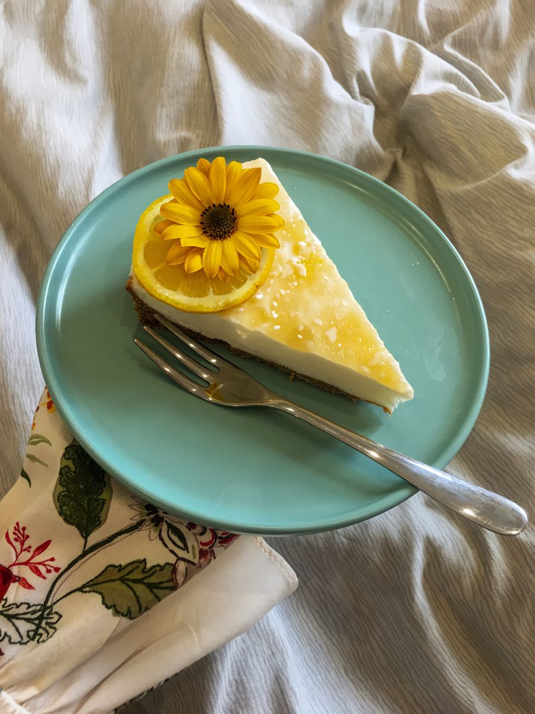

Limonlu Cheesecake Tarifi
Sıcak yaz günlerinde ekşi ve serin bir tatlı güzel gider diye düşündüm.

Şu görüntüye bakar misiniz:)
Gerekli Malzemeler
Tabanı için:
-
1,5 paket burçak bisküvi
-
100 gram tereyağı
Muhallebisi için:
-
1 su bardağı toz şeker
-
5 yemek kaşığı irmik
-
3 yemek kaşığı nişasta
-
5 su bardağı süt
-
1 paket vanilya
Limonlu sos için:
-
5 yemek kaşığı toz şeker
-
2 yemek kaşığı nişasta
-
1 limon kabuğu rendesi
-
Çay kaşığının ucuyla zerdeçal(isteğe bağlı renk vermesi için)
-
1 adet limonun suyu
-
2 su bardağı su
Hazırlanışı
-
Un haline getirdiğimiz burçak bisküvinin üzerine eritilmiş tereyağını ilave edip karıştıralım.
-
Bisküvili harcımızı kelepçeli 26cm ölçülü kalıba boşaltalım, üzerine bastırarak yerleştirelim.
-
Kalıbımızı daha sonra buzdolabına kaldıralım.
-
Diğer tarafta tencereye şeker, irmik, nişasta ve sütü alalım.
-
Karıştırarak koyulaşıncaya kadar pişirelim.
-
Muhallebiyi ocaktan alarak vanilya ekleyip karıştıralım.
-
İlk sıcaklığı çıkan muhallebiyi bisküvili harcın üzerine boşaltalım
ve ardından soğumaya bırakalım.
-
Üzeri için tencereye toz şeker, nişasta, limon kabuğu rendesi, isteğe bağlı
olarak renk vermesi için zerdeçal,limon suyu ve suyu alarak koyulaşıncaya
kadar pişirelim.
-
Muhallebinin çatlamaması için ilk sıcaklığı çıkan limonlu sosumuzu kaşık kaşık alarak yayalım.
-
Limonlu tatlımızı 1 gece buzdolabında bekletelim. Ardından dilimleyerek servis edelim.
AFİYET OLSUN